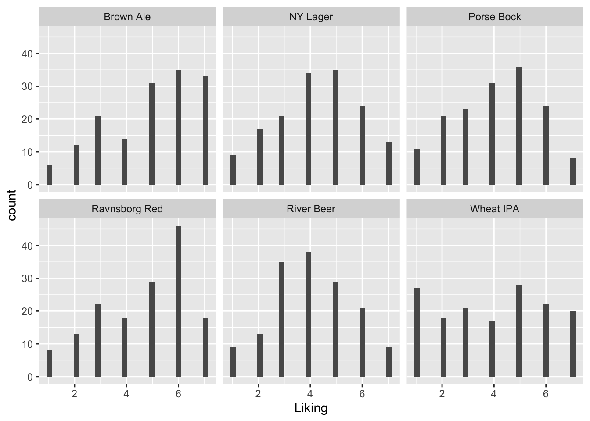

Chapter 15 TFIH Exercises
Take 5-10 minutes to look at the publication to get an overview [hvilken publ?]
15.1 Exercise 1: PCA on consumer background
From this exercise you should be able to describe who your consumers are.
Make the data available:
data("beerdemo")Calculate a PCA model including the Variables 7 ( Interest in food ) to 39 ( App_Vinous ). Remember to standardize/scale the variables
mdlPCA <- prcomp(beerdemo[,7:39],scale. = T)Plot the scores and loadings in a biplot and look for groupings of the consumers in the scores.
Group and color according to the background information not used in the model (Gender, Age,..)
library(ggbiplot)
ggbiplot(mdlPCA, groups = beerdemo$Gender, ellipse = T)
Describe what you find.
15.2 Exercise 2: PCA on CATA counts
From this exercise you should be able to describe your samples (beers) from the CATA counts. Collated (summed) for each beer of CATA score from all consumers.
Setup the collated version as described above.
beercatasum <- beercata %>%
gather(attrib, ...Calculate a PCA model including all Variables and all Objects.
PCAmdl <- prcomp(beercatasum, scale. = T)Plot the scores and describe the groupings of the samples. Plot the loadings and describe the correlations between the variables.
ggbiplot(PCAmdl)Use this biplot to find out which samples are described by which words.
15.3 Exercise 3: PCA on liking
From this exercise you should be able to describe the liking of the beer samples and see how the consumers do this.
Calculate a PCA model including all Variables and all Objects.
include_these <- complete.cases(beerliking)
PCAliking <- prcomp(beerliking[include_these,-1], scale. = T)Plot a biplot or loading plot, and use the loadings and describe the correlations between the variables (liking of beers in this case).
ggbiplot(PCAliking)Plot the scores and describe the groupings of the samples by colouring the score plot according to the consumer background variables. Note that the 160 rows in both datasets match each-other, so we can glue the demo information directly onto the liking model. If that was not the case, matching using left_join() or inner_join() would be nessesary before analysis.
ggbiplot(PCAliking,groups = beerdemo$Age[include_these], ellipse = T)Any trends? For instance, how is liking related to the individual consumer diversity of beer (Beer types/month)?
… Some code to get all 7-scale demo information plots. You may want to export and view in a pdf viewer for zooming etc.
gall <- cbind(PCAliking$x[,1:2], beerdemo[include_these,]) %>%
gather(var,val,`Interest in food`:App_Vinous) %>%
ggplot(data = ., aes(PC1,PC2, color = factor(val))) +
geom_point() +
stat_ellipse() +
facet_wrap(~var)
ggsave(filename = 'anicebigfigure.pdf',gall, height = 20, width = 20)15.4 Exercise 4: PLS on CATA counts and liking
From this exercise you should be able to conclude what drives the liking of your samples (beers).
For each beer, the collated CATA counts is the predictors, and the averaged liking is the response.
likingsum <- beerliking %>%
gather(Beer, liking, -`Consumer ID`) %>%
group_by(Beer) %>%
dplyr::summarise(lik = mean(liking, na.rm = T))Check that the rows are ordered in the same way:
likingsum$beer
beercatasum$Beer
CATAlik <- list()
CATAlik$CATA <- scale(as.matrix(beercatasum[,-1]))
CATAlik$lik <- scale(likingsum$lik)
rownames(CATAlik$lik) <- rownames(CATAlik$CATA) <- beercatasum$BeerCalculate a PLS model where CATA features are predictors and liking is response for all Objects.
library(pls)
catalik.pls <- plsr(lik ~ CATA, ncomp = 2, data = CATAlik, validation = "LOO")
corrplot(catalik.pls, labels = colnames(beercatasum)[-1])
biplot(catalik.pls)Plot the loadings and study which X variables are important for the liking score. Advanced: Plot the Regression coefficients (scaled) and try to interpret the meaning of this plot (Hint: use your findings from the loadings plot).
15.5 Exercise 5: Mixed modelling on the liking
Dataset: Beer_XYZmatrix.xlsx, sheet “Z and Y liking” Import the datasheet in to R Studio. Check to see if all variables have the correct description/denomination (factor, numerical etc.) Are there any significant product differences for the liking? If so, what does the Tukey tell us? How does this fit with what you have done in the PCA/PLS exercises. Is the liking in general affected by the age, gender, household size or beer knowledge? What is the effect? Try to think of a plot that can show the significant differences. Do men and women score the samples significantly different in liking? Calculate the sample/gender differences in averages, try to use Pivot Tables in Excel.
15.6 Exercise 6: Comparing CATA binary data and counts
Dataset: Beer_XYZmatrix.xlsx, sheets “X CATA collated, counts” and “Z + Y + X unfolded” If time… Calculate two PCA models: one on the X unfolded matrix (CATA answers in binary codes, more columns and you just choose the ones you need) and one on the CATA counts. Compare the outcome of the two models. Evaluate explained variance Evaluate loadings plots Is this expected when looking at counts and “raw” data What type of information is lost by looking at the CATA counts?
15.7 Exercise 7: Cochran’s Q test on CATA binary data
Dataset: Beer_XYZmatrix.xlsx, sheet “X unfolded”
If time… Import the datasheet in to R Studio using the CSV format (save the file as CSV in Excel). Choose 4 relevant CATA attributes (based on your previous results today) to make a Cochran’s Q test for, comment on the results (i.e. the sample differences).